P-CORE: Self-Supervised Surface Consistency for Point-Based Neural Editing
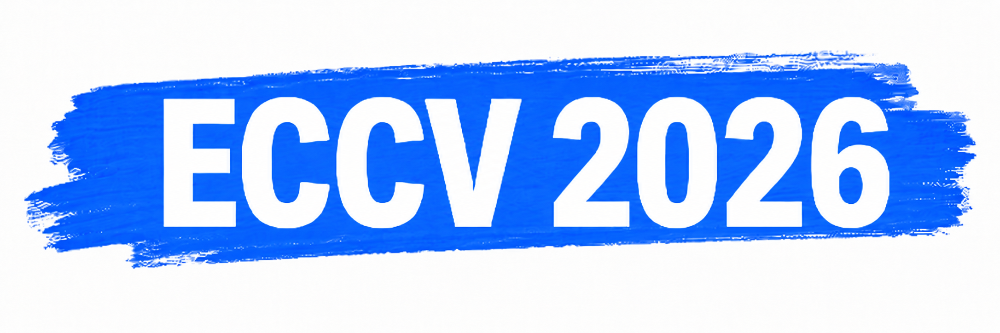
Abstract
Advances in neural rendering enable high-fidelity multi-view reconstruction of 3D scenes, yet free-form non-rigid shape editing remains challenging. Point-based neural representations are attractive for reconstruction because they lack fixed connectivity, so the learned surface topology is not constrained by the initialization. However, this same property causes them to develop holes and surface discontinuities under large deformations. To address this, we propose a self-supervised method that lets point-based representations adapt to large deformations without ground-truth multi-view images of the deformed geometry. The key idea is to generate random deformations and enforce consistency of the predicted surface before and after deformation: the surface predicted from the deformed point cloud should match the deformation applied to the surface predicted from the original point cloud. We build on attention-based point representations, which—unlike splatting-based ones—interpolate between points with a learned kernel rather than a Gaussian around each point; this learned kernel adapts to large deformations without adding or removing points. Experiments on synthetic editing benchmarks (Neural Editor, Objaverse) show that our approach outperforms existing point-based methods in zero-shot editing and substantially reduces artifacts, and qualitative results on DTU and Mip-NeRF 360 demonstrate effectiveness on real-world scenes.
Method Overview

While point-based representations learn an accurate surface from multi-view images in their canonical space, they often produce holes and surface discontinuities under unseen deformations. P-CORE applies an identical deformation field to both the canonical point cloud and its predicted surface points; the deformed surface points act as geometric pseudo-ground truth that supervises the model's surface prediction on the deformed point cloud. A stop-gradient on the target prevents collapse. This self-supervised fine-tuning yields robust, hole-free surfaces under severe non-rigid edits.
Qualitative Results
Zero-shot non-rigid edits, compared against GT, PAPR, SC-GS, and Mani-GS.
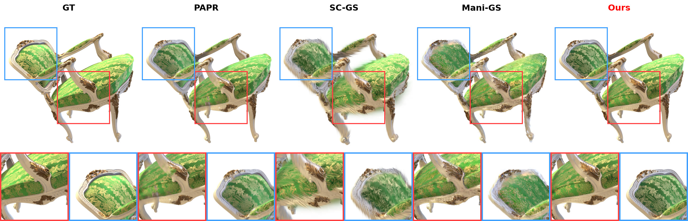
Chair (Neural Editor) — zero-shot edit
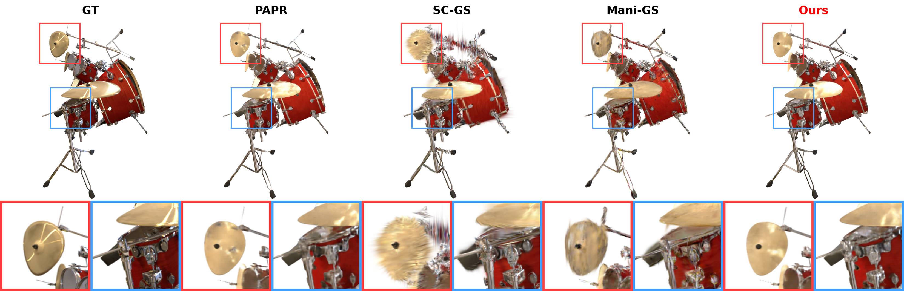
Drums (Neural Editor) — zero-shot edit
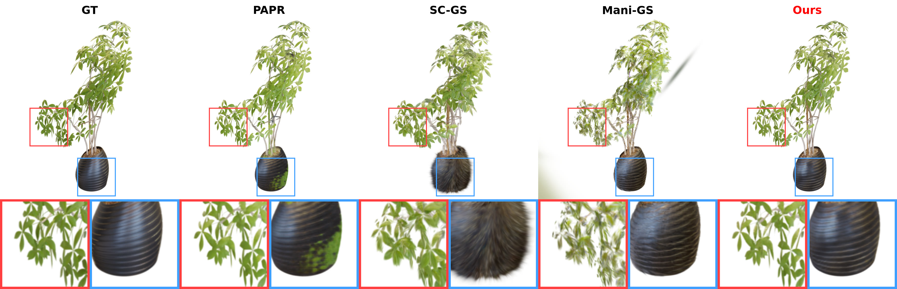
Ficus (Neural Editor) — zero-shot edit
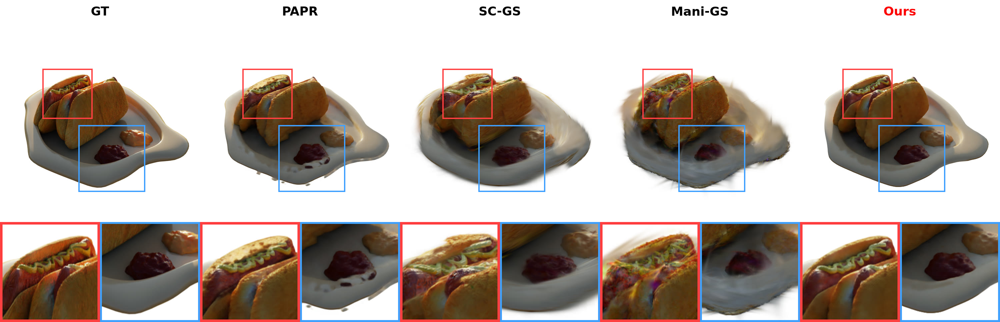
Hotdog (Neural Editor) — zero-shot edit
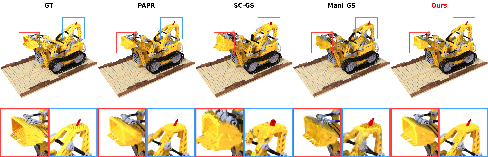
Lego (Neural Editor) — zero-shot edit
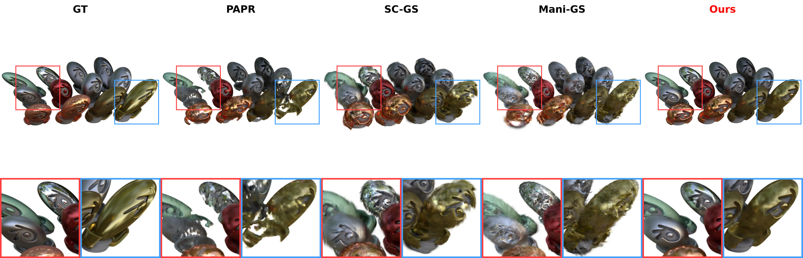
Materials (Neural Editor) — zero-shot edit
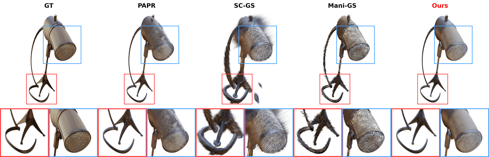
Mic (Neural Editor) — zero-shot edit
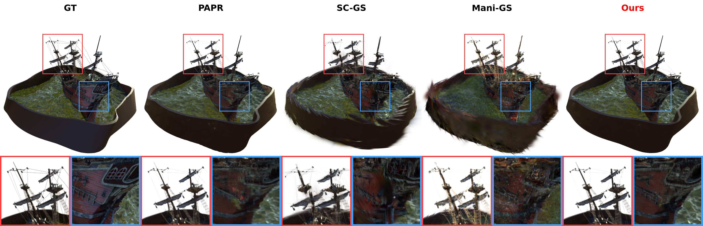
Ship (Neural Editor) — zero-shot edit
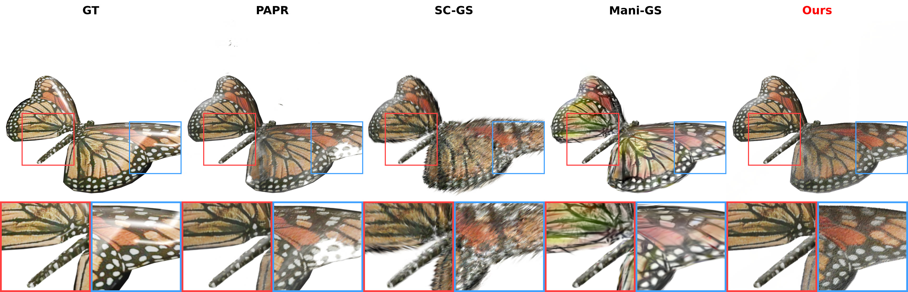
Butterfly (Objaverse) — zero-shot edit
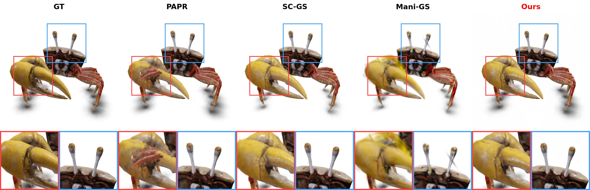
Crab (Objaverse) — zero-shot edit
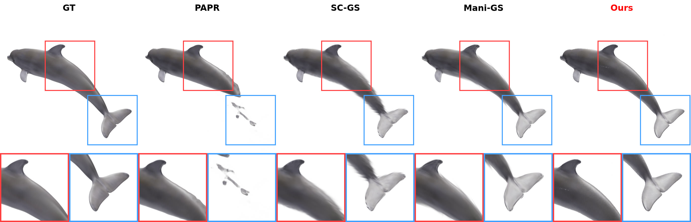
Dolphin (Objaverse) — zero-shot edit
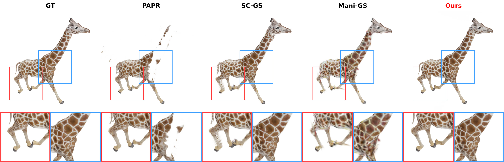
Giraffe (Objaverse) — zero-shot edit
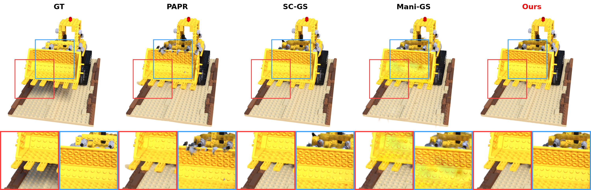
Lego (Objaverse) — zero-shot edit
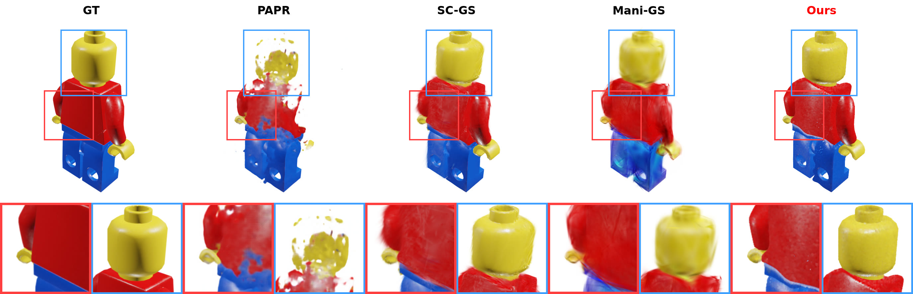
Legoman (Objaverse) — zero-shot edit
Quantitative Results
Average performance on the Neural Editor dataset and an Objaverse subset across all scenes. best, second best.
| Method | Neural Editor | Objaverse (PAPR-in-Motion subset) | ||||||
|---|---|---|---|---|---|---|---|---|
| PSNR ↑ | SSIM ↑ | LPIPS ↓ | # Primitive | PSNR ↑ | SSIM ↑ | LPIPS ↓ | # Primitive | |
| Deforming-NeRF | 14.71 | 0.722 | 0.197 | — | 15.89 | 0.773 | 0.180 | — |
| Neural Editor | 25.62 | 0.939 | 0.078 | ~1M | 28.02 | 0.956 | 0.048 | ~1M |
| SC-GS | 18.55 | 0.832 | 0.123 | ~236K | 25.29 | 0.929 | 0.057 | ~228K |
| Mani-GS | 20.59 | 0.875 | 0.116 | ~1.2M | 26.04 | 0.946 | 0.069 | ~362K |
| PAPR | 24.22 | 0.930 | 0.066 | 30K | 23.15 | 0.940 | 0.058 | 30K |
| Ours | 25.31 | 0.942 | 0.054 | 30K | 28.30 | 0.965 | 0.039 | 30K |
BibTeX
@inproceedings{zhang2026pcore,
title = {P-CORE: Self-Supervised Surface Consistency for Point-Based Neural Editing},
author = {Zhang, Yanshu and Peng, Shichong and Aghabozorgi, Mehran and Moazeni, Alireza and Li, Ke},
booktitle = {European Conference on Computer Vision (ECCV)},
year = {2026}
}